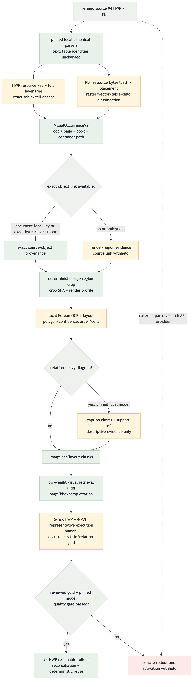
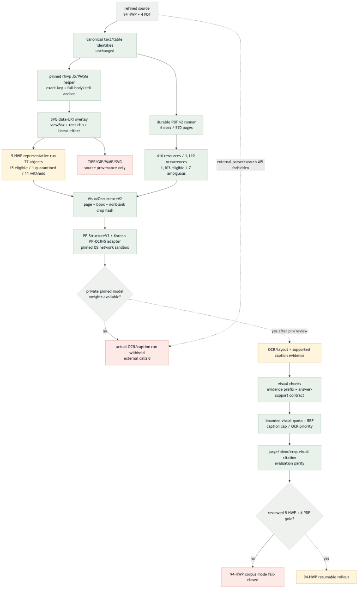

HWP/PDF visual parsing flow validation
BLANK-CROP CORRECTION VERIFIEDLOCAL ONLYPRIVATE QUALITY GATES BLOCKED
목표와 현재 흐름


Target vs Current
| ID | Target | Final evidence | Status |
|---|---|---|---|
| V1 | VisualOccurrenceV2 identity | closed schema, stable IDs, mixed-state validator | MATCHED |
| V2 | HWP exact resource/cell anchor | pinned helper; 27 exact objects in five documents | MATCHED |
| V3 | exact fallback + deterministic crop | 15 nonblank crops; TIFF 1 quarantined; 11 page-less objects withheld | MATCHED |
| V4 | PDF resource/placement runner | 416 resources; 1,110 occurrences across 570 pages | MATCHED |
| V5 | local OCR/layout | pinned OS-sandboxed adapter; private weights unavailable | CODE MATCHED / RUN BLOCKED |
| V6 | supported caption/retrieval/citation | support guard, bounded fusion, visual-gold scoring parity | MATCHED PUBLIC |
| V7 | representative → 94 rollout | five-document run complete; reviewed nine-document gold absent | PARTIAL / BLOCKED |
실제 실행 결과
| Lane | Result | Eligible | Withheld |
|---|---|---|---|
| HWP representative | 5 documents · 27 objects | 15 nonblank page/bbox crops | 1 TIFF quarantined · 11 doc-only |
| PDF full set | 4 documents · 570 pages · 1,110 occurrences | 1,103 crops | 7 complex ambiguous regions |
| OCR/caption | runner, cache, contracts and fixture E2E complete | 0 private-model runs | weights and human gold required |
2026-08-31 blank-crop correction
기존 대표 bundle의 unique crop 14개가 모두 순백임을 확인해 완료 판정을 철회했다.
rhwp SVG의 embedded data-URI raster를 직접 합성하고 nested SVG viewBox/viewport·rect clip을
bitmap source crop으로 반영했다. 관측된 linear RGB filter와 opacity도 픽셀에 적용한다.
순백 crop은 visual_crop_blank로 거부하며, 현 canvas가 디코딩하지 못하는 TIFF는
crop 없이 격리한다. 또한 <style>, class, display/visibility/inline style과
<defs> 내부 image를 허용 경로로 오인하지 않고 fail closed한다.
검색·응답 수리
Caption cap을 적용하기 전에 visual 후보를 충분히 조회하고, base 결과가 top-k를 채워도 제한된 visual slot을 보존한다. OCR/layout이 caption보다 우선하며 caption은 base보다 낮다. 증거 ID prefix와 support reference를 schema와 수동 validator에서 함께 검증한다. 지원 참조가 없는 caption-only 답변은 자동 기권한다.
무결성과 결정성
수정된 HWP 대표 bundle은 15/15 crop이 nonblank이고 즉시 재실행에서 같은 artifact-set identity와
artifact hash를 반환했다. page render도 14/14 nonblank다. current helper SHA-256은
0b7ab8edd3b3cb6018704b40e1c7b662041a79c857dc99eba66432280cfc0a9b, artifact set은
visualv2_1a25cd3f5f6c34dfe2e8ff9c이며 strict reuse를 통과했다. 외부 API 호출은 0회이고
private_egress=false다. 새 fail-closed 회귀를 포함한 helper focused 11/11을 통과했고,
대표 530페이지 스캔에서 해당 CSS/defs-image 패턴은 0건이었다. repository-wide discovery
505/505, focused schema 2/2, compileall, Node syntax, diff-check와 repository safety 562 files도
통과했다. Mermaid target/current PNG와 이 HTML은 실제 Chrome headless render에서 정상 표시됐다.
품질 경계
다음 승인 경계
- HWP 5건 + PDF 4건 occurrence/title/OCR/관계 gold를 사람이 검토한다.
- 고정 checksum의 PP-StructureV3/Korean PP-OCRv5 weight로 private 품질 gate를 실행한다.
- 두 gate가 통과한 뒤에만 HWP 94건 전수와 visual retrieval gold를 실행한다.
기본 Streamlit/runtime 전환과 외부 parser/search API 사용은 계속 금지한다.